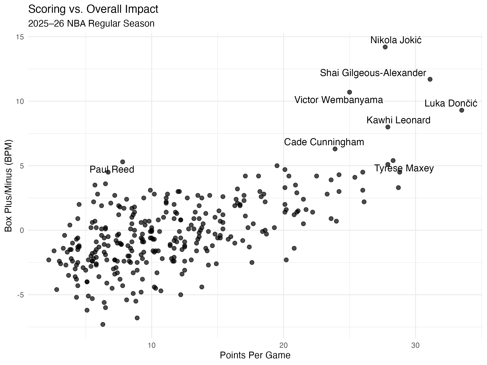
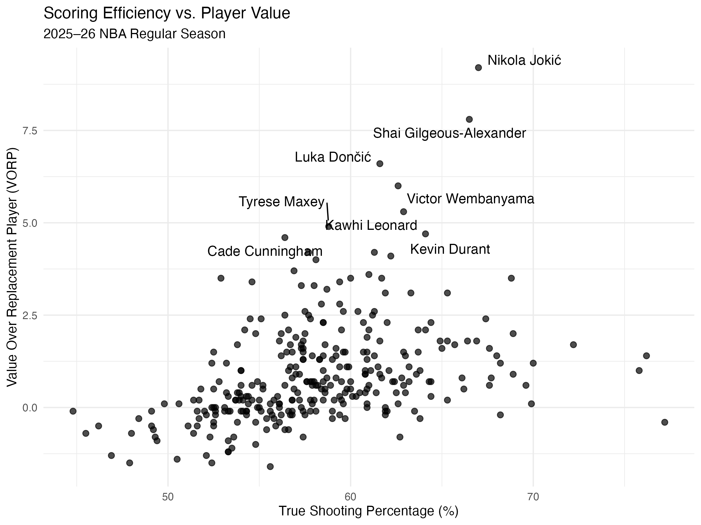
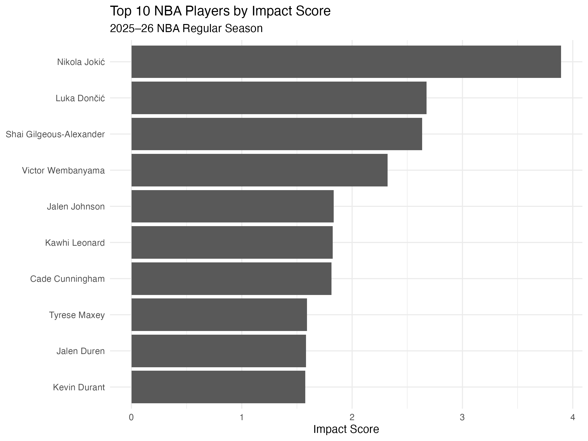

Who Had the Biggest Impact in the 2025–26 NBA Season?
Who Had the Biggest Impact in the 2025–26 NBA Season?
Basketball fans often judge players first by one statistic: points per game. Scoring is important, but it does not capture everything a player contributes. A player can also create value through passing, rebounding, shooting efficiently, defending, and helping the team perform better while he is on the court.
This creates a more useful question:
If we look beyond scoring, which players had the greatest overall impact during the 2025–26 NBA regular season?
To answer this question, I use web-scraped NBA data to compare traditional statistics with advanced measures of player value. I then combine several dimensions into a simple Impact Score.
Data Collection and Reproducibility
I used the rvest package in R to collect player statistics from Basketball-Reference. I scraped two publicly available tables: one containing traditional per-game statistics and another containing advanced statistics.
The traditional data includes variables such as points, rebounds, assists, steals, and blocks. The advanced data includes True Shooting Percentage (TS%), Box Plus/Minus (BPM), Win Shares, and Value Over Replacement Player (VORP).
To keep the scraping process lightweight, I requested only the pages needed for the analysis and inserted a short delay between requests.
I also saved the original scraped tables before cleaning them. This separates the workflow into two steps:
- Collect and save the raw data.
- Clean and analyze the saved data.
This makes the analysis easier to reproduce because the cleaning and visualization steps do not require scraping the website again every time the project is run.
After collecting the data, I removed summary rows, converted relevant variables to numeric values, handled players who appeared for multiple teams, and merged the traditional and advanced datasets. I then restricted the sample to players who appeared in at least 50 games, so that the comparison would not be driven by players with very small samples.
Does More Scoring Mean More Impact?
The first figure compares points per game with BPM, an advanced measure of a player’s estimated contribution relative to an average player.
There is clearly a positive relationship. Players who score more generally tend to have higher BPM. However, the relationship is far from perfect.
Nikola Jokić stands out with the highest BPM even though he was not the league’s highest scorer. Shai Gilgeous-Alexander, Luka Dončić, Victor Wembanyama, and Kawhi Leonard also combine high scoring with strong BPM.
This matters because two players with similar scoring averages can still have very different overall impacts. Scoring tells us how much offensive production a player provides, while BPM also captures other parts of a player’s contribution.
In other words, high scoring is useful evidence of player quality, but it is not enough by itself to rank players.
Efficiency Is Not the Same as Total Value

The second figure compares True Shooting Percentage with VORP.
TS% measures scoring efficiency while accounting for two-point shots, three-point shots, and free throws. VORP, by contrast, attempts to measure a player’s cumulative value relative to a replacement-level player.
Again, the relationship is positive but imperfect.
Some players on the far right side of the graph have very high shooting efficiency but only modest VORP. One reason is that efficiency alone does not tell us how large a player’s role is. A player can shoot very efficiently while taking relatively few shots or playing a smaller offensive role.
The most interesting players are therefore in the upper-right portion of the graph. They combine strong efficiency with high total value.
Jokić is especially notable, while Gilgeous-Alexander, Dončić, Wembanyama, Leonard, and Kevin Durant also perform strongly across these dimensions.
The comparison shows why player evaluation needs both efficiency and volume. Neither one alone tells the complete story.
Building a Simple Impact Score
To compare players across several dimensions at once, I constructed a simple Impact Score.
I standardized six variables using z-scores:
- Points
- Rebounds
- Assists
- TS%
- BPM
- VORP
I then gave each variable equal weight.
The score can be written as:
\[ Impact_i = \frac{ z(PTS_i)+ z(REB_i)+ z(AST_i)+ z(TS_i)+ z(BPM_i)+ z(VORP_i) }{6} \]
This is not an official NBA statistic. The purpose is not to create a perfect measure of player quality. Instead, it provides a transparent way to combine scoring, playmaking, rebounding, efficiency, and advanced impact into one measure.

Using this definition, Nikola Jokić ranks first, followed by Luka Dončić and Shai Gilgeous-Alexander. Victor Wembanyama ranks fourth, while Jalen Johnson, Kawhi Leonard, Cade Cunningham, Tyrese Maxey, Jalen Duren, and Kevin Durant complete the top ten.
The important result is that this ranking does not simply reproduce the scoring leaderboard.
For example, Dončić ranks first in points per game among the players in this sample, but Jokić ranks higher in the composite score because he performs exceptionally well across several other dimensions.
That is exactly the information that would be lost if player evaluation were based only on PPG.
What Should We Use to Compare Players?
The results suggest a practical way to evaluate NBA players.
If the goal is to compare candidates for awards such as MVP or All-NBA, points per game can be a useful starting point, but it should not be the final ranking.
A better approach is to first use scoring to understand a player’s offensive production, then use TS% to check whether that scoring is efficient, and finally use BPM and VORP to evaluate whether the player’s broader contributions translate into overall value.
This approach prevents high-volume scorers from automatically being ranked above players who contribute more through efficiency, passing, rebounding, or all-around impact.
For example, the results here suggest that a ranking based only on scoring would undervalue Nikola Jokić, whose advantage becomes much clearer once multiple dimensions are considered.
Limitations
The Impact Score should not be interpreted as a definitive ranking of NBA players.
The six statistics receive equal weight, but there is no theoretical reason why scoring, rebounding, efficiency, BPM, and VORP should contribute equally to “impact.” A different weighting system could produce a different ranking.
Some parts of basketball, especially defense, player roles, team context, and lineup quality, are also difficult to summarize using only a small number of statistics.
Therefore, the score is better viewed as an illustration of how combining multiple measures can change our conclusions compared with using only one statistic.
Takeaway
The main result is not simply that points per game are incomplete. Different statistics answer different questions.
PPG measures scoring volume. TS% measures scoring efficiency. BPM and VORP attempt to capture broader overall value.
For analysts, fans, or voters comparing NBA players, the most useful approach is therefore to combine traditional production with efficiency and advanced impact measures rather than ranking players by scoring alone.
In this sample, that changes the interpretation substantially. Luka Dončić leads the scoring comparison, but Nikola Jokić rises to the top once a broader set of contributions is considered.
The Impact Score itself is only one possible weighting system, but the larger lesson is more general:
The best scorer is not necessarily the most valuable player.